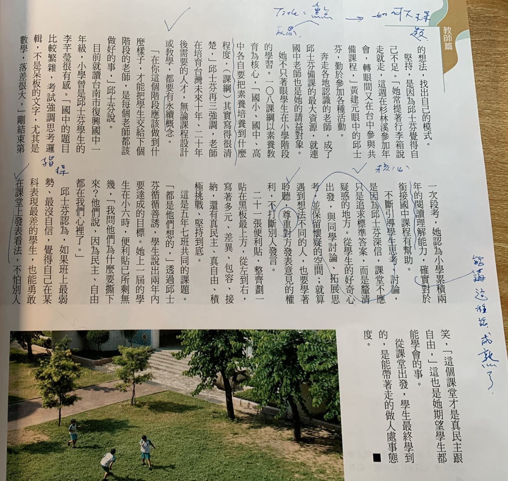
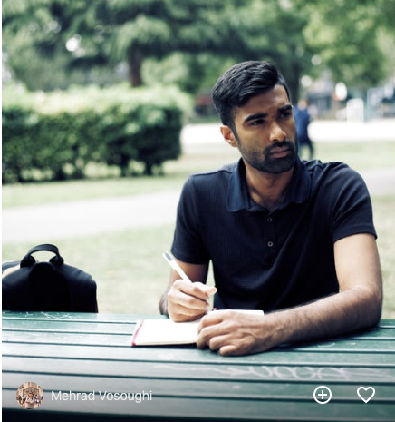
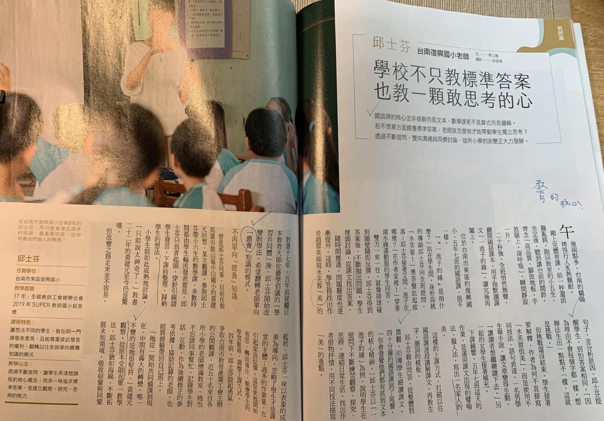
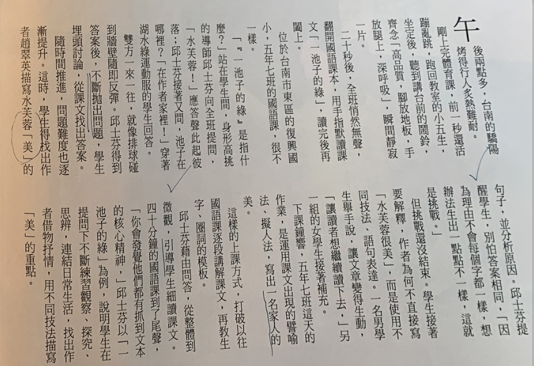
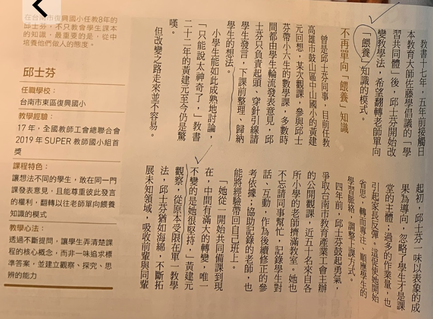
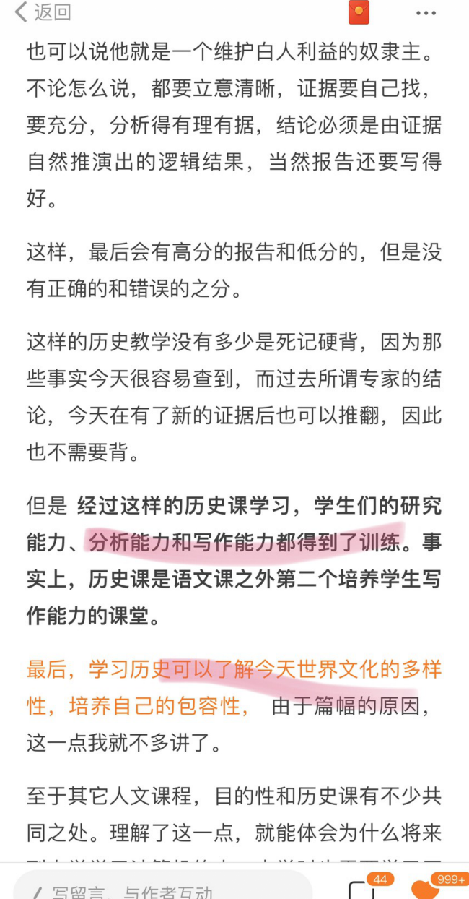
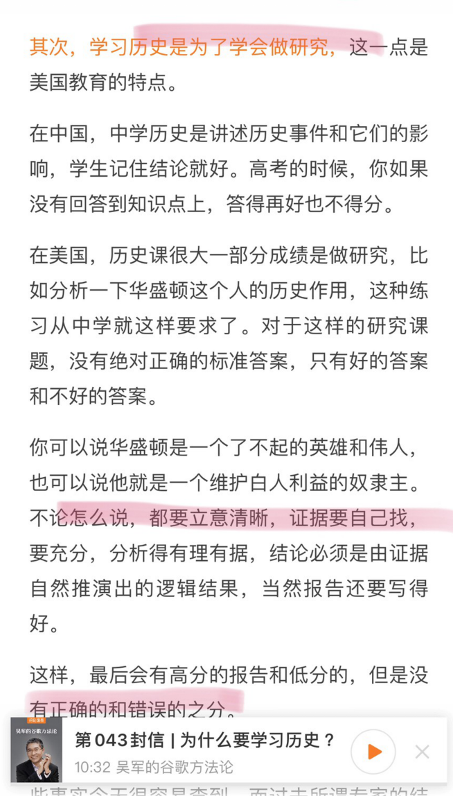
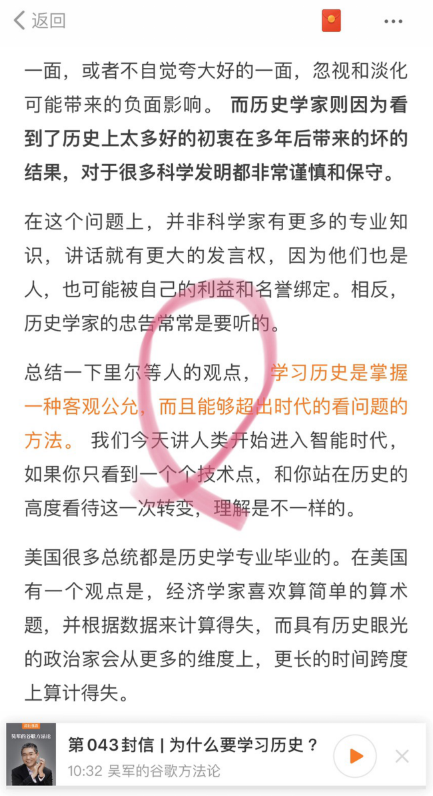
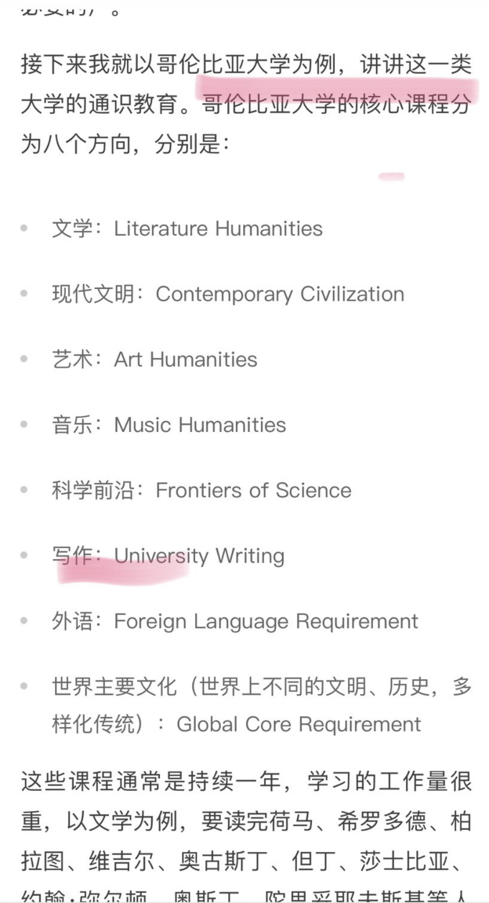

[教育] 思考才是教育的核心 | Forward to I think, therefore I am
Status: Published
今天分享來自<天下雜誌> | 685期 和 <得到app> | 谷歌方法論 43封信
談的是教學的核心，我們先看看雜誌專訪的副標題
國語課的核心並非修此而是文本，數學課的更不是算式而是邏輯
若不想單方面餵養標準簽案，老師該怎麼做才能帶動學生獨立思考？
透過不斷提問、雙向溝通與同儕討論，這所小學的改變正大力發酵

台南復興國五年七班，很不一樣
鐘聲剛響起，進行的是國語課，學生們用手指默讀課文「一池子的綠」，讀完後再闔上。接著老師開發問：「一池子的綠」是指什麼？此時應答聲此起彼落，是「水芺蓉！」
接又老師又問：「池子在哪裡？」，學生回答到「在作老家裡！」課堂中，雙方一來一往，就像一顆球碰撞牆壁不斷反彈。邱老師得到答案後，不斷拋出問題，學生埋頭討論，從課文找出答案。
隨著時間推進，問題的難度也逐進提升，這時，學生得找出課文形容的「美」句子，並分析原因…

翻拍天下雜誌 | 685期 專訪
答案相同，理由不同
邱老師提醒學生不怕答案相同，因為你們的理由不會每個字都一樣。想辨法生出一點點不一樣，這就是挑戰！這樣的上課方式
打破以往國語課逐段解講課文，再教生字、圈詞的模版。
整體到微觀，引導思考
邱老師藉由問答，從整體到微觀，引導學生自動細讀課文。四十分鐘的國文課到了尾聲，
學生們都可以抓到文本的核核心精神
邱老師以「一池子的綠」為例，說明學生在提問下不斷練習觀察、探究、思辯，連結日常生活，找出作者借物抒情，用不同技法描寫美的重點。

powered by Pexels: thinking
餵養教育(填鴨教育)
邱老師教書資歷17年，5年前接觸到日本教育大師「學習共同體」，邱老師開始改變教學方法，希望翻轉老師單向「餵養」知識的模式
曾是邱老師的同學觀察到如何做到整體到微觀，引導學生思考。老師的角色是負責起頭、穿針引線請學生發予，下課前整理、歸納學生的想法。這個概念和我最近上培訓課，去當客戶的助教的經驗相符，小組討論時即使同學一片極靜、沉默甚至是沒興趣，我的任務就是 → 引領思考，歸納重點。
畢業同學現身說法
目前就讀國一的李同學，曾是邱老師的學生則很有感：「國中的題目比較繁雜，考試強調思考邏輯，不是呆板的文子，尤其是數學，落差很大」，而剛結束段考的她認為小學累積2年的閱讀理解能力，確實對於銜接國中課程有幫助。不斷引導學生思考、討論是本質，課堂不應只是追求標準答案，而是釐清疑惑的地方。
美國人的歷史課
在台灣和中國，一般的歷史課是講述歷史事件和它們的影響，學生記住結論就好。但美國，學歷史是為了學會做究，這一點是美國教育的重點。他們的歷史課很大一部份成績是做研究，比如說分析一下華盛頓這個人在歷史作用，這種練習在中學就這樣要求了
對於作業沒有絕對正確的標準答案，只有好的答案和不好的答案。
你可以說華盛頓是了不起的偉人，也可以說是為了維護白人利益自的政治家。
不管怎麼說
分析得要有理有據，結論必須是由証據自然推演出的邏輯結果，當然報告還要寫得好。
吳軍 | 谷歌方法論 43封 | 為什麼要學歷史
讀過一次華盛頓簡介，每個人的認知都不盡相同
結論：
108年課綱以素養教育為核心，國小、國中、高中各自要把素養培養到什麼程度，其實都寫了很清楚，近年課綱一直在改，教學方式只能靠老師們自覺，很多人說，教育要仿歐美的教育捨棄現況的課綱。我們就用美國人學歷史來借鏡，課程不是唯一重點，真正的重點在老師的教學手法！因此老師在培育台灣未來十年、二十年後需要的人才，無論是課程設計或教學，都要有永續的概念。
美國歷史課的學習，學生們的驗究能力、分析和寫作能力都得到了訓練，我認為這就是最佳自主思考的能力。
常言道：終生學習的背後，其實就是自學，而懂得主動求知，找資料就是一切的根本。張忠謀也提倡只有終身學習，才可避免被AI取代，這觀念尤其重要！
專業的道路上，只有累積沒有奇蹟
時間花在那裡，成就就在那裡



經過這樣歷史課的學習，學生們的破究能力、分析和寫作能力都得到了訓練。

學歷史是為了學會做究
在美國，學歷史是為了學會做究，這一點是美國教育的重點。
一般的歷史課是講述歷史事件和它們的影響，學生記住結論就好。
在美國，歷史課很大一部份成績是做研究，比如說分析一下華盛頓這個人在歷史作用，這種練習在中學就這樣要求了，對於這樣的作業，沒有絕對正確的標準答案，只有好的答案和不好的答案。
你可以說華盛頓是了不起的偉人，也可以說是為了維護白人利益自的政治家。不管怎麼說，分析得要有理有據，結論必須是由証據自然推演出的邏輯結果，當然報告還要寫得好。
經過這樣歷史課的學習，學生們的驗究能力、分析和寫作能力都得到了訓練。
吳軍 | 谷歌方法論 43封 | 為什麼要學使史


